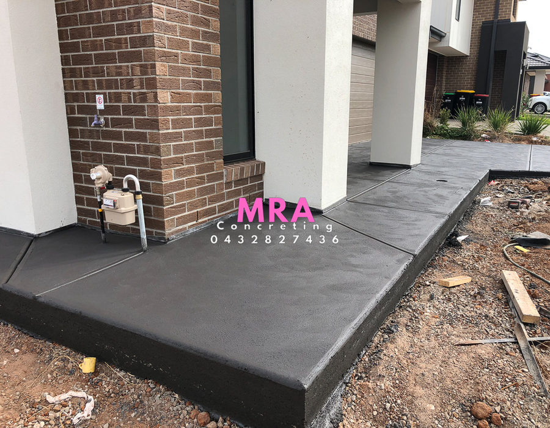
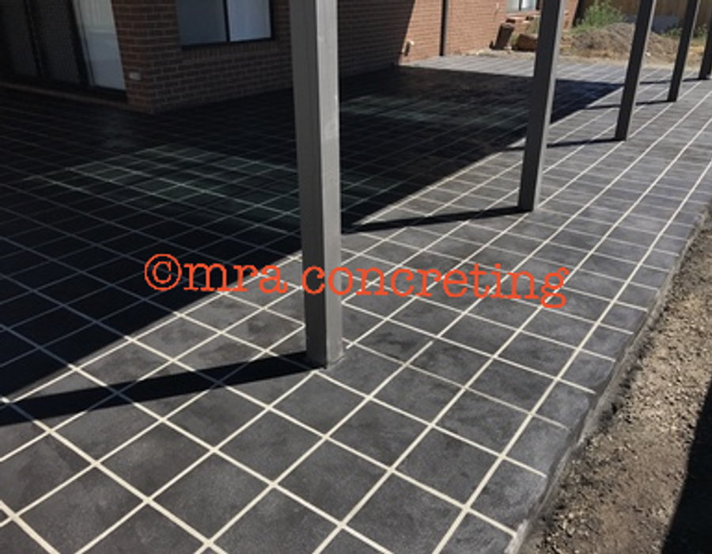
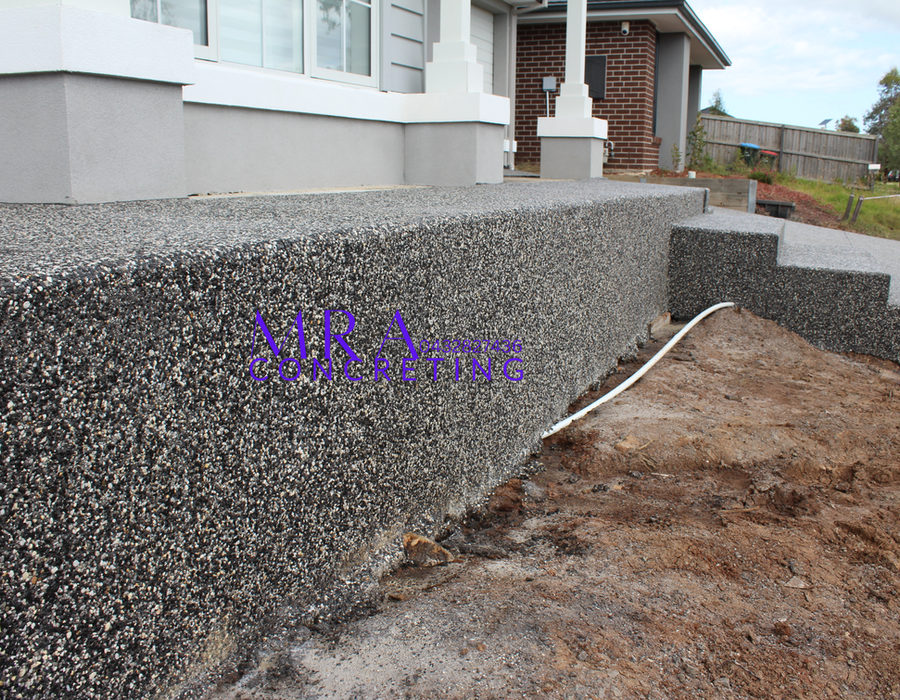

Exposed Aggregate Concrete
Exposed aggregate concrete includes multiple small demo cuts, acid washing & sealing.
Services
All our services that we provide are completed by us from opening, prep to finish. We do driveways, backyards, footpaths - no job is to big or small.
Exposed aggregate concrete includes multiple small demo cuts, acid washing & sealing.

Plain concrete.

Coloured concrete.

Stencil / slate include the exposed aggregate preparation and finishing services also.

We make the hassle extremely easy when dealing with the council and deal directly with them.

Concrete retaining walls.

Foundations / slabs.

Site levels and turf installation.

Resealing / acid washing.

Bobcat works.
Preparation
All concrete includes F62 mesh, crushed rock base and a 100mm thick concrete minimum. Expansion foam is provided around all brickwork and cut after concrete has settled in-lieu with brickwork.
Free measure and quote